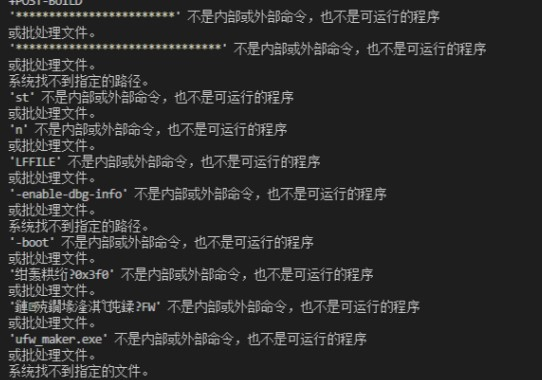
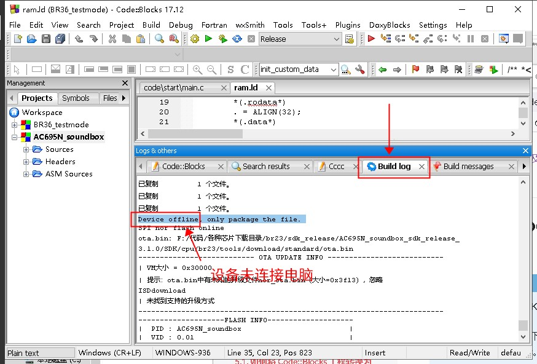
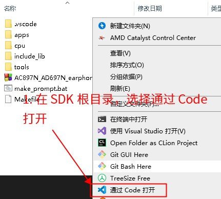
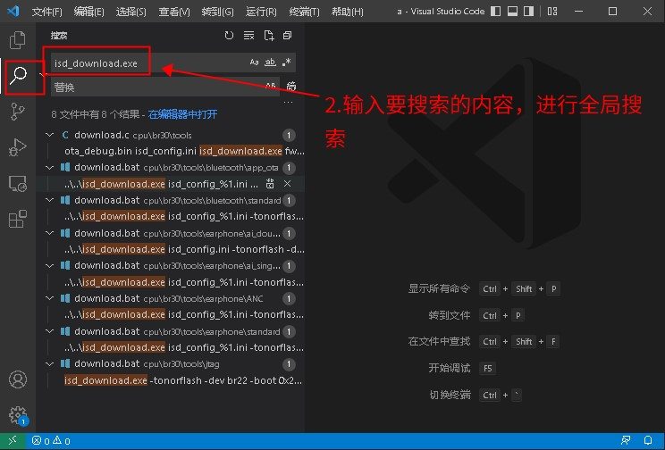
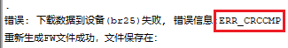
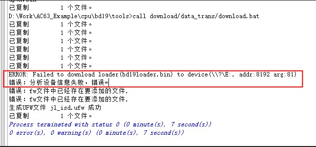

7.6. Why Can't the Program Be Downloaded?
Note
This page was missing from the saved files and was restored from an Internet Archive snapshot (2026-08-24); it may differ slightly from the current online version.
Sometimes, after a build, the firmware file cannot be downloaded to the device. You can troubleshoot this with the following steps:
7.6.1. Wrong encoding of the download script download.bat
When Windows runs a bat batch file, the file must be in the local encoding, which on Chinese systems is usually gbk. If download.bat is encoded in utf-8, errors such as is not recognized as an internal or external command, operable program or batch file (不是内部或外部命令，也不是可运行的程序) are reported, as shown below:

In this case, consider changing the file encoding to gbk with a tool such as Notepad++, or removing all Chinese characters from the file, which makes it equivalent to an ANSI-encoded file.
7.6.2. Device offline
Check the Code::Blocks build log for errors such as Device Offline, as shown below:

If there are, the device is not connected to the computer or has not entered download mode. Possible causes include:
The device is not plugged in correctly, the USB cable is loose, etc., so the device does not appear in Device Manager (see the explanation below)
The wrong device is plugged in, or the chip model does not match.
Note
When a device in download mode is connected correctly, an additional hidden disk should appear when you open My Computer (make sure your file browser is set to show hidden files and devices).
In addition, under [My Computer] - [Device Manager] - [Disk drives], there should be a disk device whose name contains br**uboot1.0, bd**uboot1.0 or dv**uboot1.0.
For more detailed steps, see Upgrading and Downloading
If the corresponding device already appears in Device Manager but the Device Offline message still appears, try the following methods in order:
Try downloading with administrator privileges, that is, open Code::Blocks as administrator, open the project, and then build and download. The download tool needs to access a physical device, which Windows may refuse in some cases, for example when you are logged in remotely.
Check whether antivirus software, permission control software or similar software is installed on the computer, and whether the current user has permission to access USB devices (the download tool needs to read and write USB devices, and some computers may be configured to block access to USB devices for security and confidentiality reasons).
If none of the above works, try another computer.
7.6.2.1. Why can code sometimes be downloaded to the device only once?
A common mistake is that no programming pins were reserved when the board was designed. After the chip has been programmed once, the firmware starts running and the chip is no longer in programming mode. The most typical symptom is: a blank chip programs normally, but afterwards the chip can never enter download mode again. For details on how the board and its programming pins should be designed, contact your distributor or whoever provided the SDK.
7.6.3. KEY file does not match the chip
An error such as key mismatch or mismatch (不匹配) is reported. This error means that the key file does not match the chip. Check the parameters with which the download script download.bat calls isd_download.exe:
If the chip is a blank chip, there is no need to specify the
-key xxxxxparameter when downloading; remove it. A blank chip does not need a key file.If the chip is not blank, you must specify the corresponding
-key xxxxxwhen downloading, wherexxxxxis the key file that matches the chip. Obtain this file from your distributor.
Note
Suppose you have confirmed that the chip is not blank and you specified a KEY file when downloading, but a mismatch error is still reported.
This means that the KEY file you specified does not match the current chip. In other words, a different key file has already been programmed into this chip (not the KEY file you specified). Either you received a chip that was programmed incorrectly, or you received the wrong KEY file.
Chips and KEY files must correspond one-to-one. Once a chip has been programmed with a KEY, its KEY cannot be changed, and the chip cannot be programmed with any other KEY file
Important
Note that the download.bat script may call other bat scripts, so it is recommended to search the entire SDK project for the keyword isd_download.exe.


Note
If your KEY file name contains spaces, it is recommended to remove them, or to enclose the name in double quotes "", for example "key file with space.key".
To avoid problems, it is recommended that key file names contain no spaces at all.
7.6.4. Unstable USB connection or damaged FLASH
The message Error message: ERR_CRCCMP (错误信息:ERR_CRCCMP) is displayed. This error means that after the download completed, a mismatch was found when the FLASH contents were compared, as shown below:

Possible causes:
The connection between the device and the computer is unstable, causing occasional failures. Reconnect the USB cable securely and try again.
The FLASH of the device is damaged, so some areas cannot be written correctly. Replace the device and try again.
7.6.5. Unstable USB connection or damaged chip
The message Error: failed to parse device information (错误：分析设备信息失败) is displayed. This error means that an error occurred while parsing the device information:

Possible causes:
The connection between the device and the computer is unstable, causing occasional failures. Reconnect the USB cable securely and try again.
The chip of the device itself is damaged, causing abnormal communication with the PC tool.
7.6.6. Virtual serial port not set up correctly
The message Failed to open device (JLVirtualtagSerial) (打开设备(JLVirtualtagSerial)失败) is displayed. This error means that the virtual serial port device cannot be opened, possibly because the virtual serial port has not been set up. See Serial upgrade.
7.6.7. Other possible causes
In other situations, you can try the following steps:
Switch to another computer and download again
Switch to another device and download again
This helps determine whether the download failure is related to the computer or to the device.